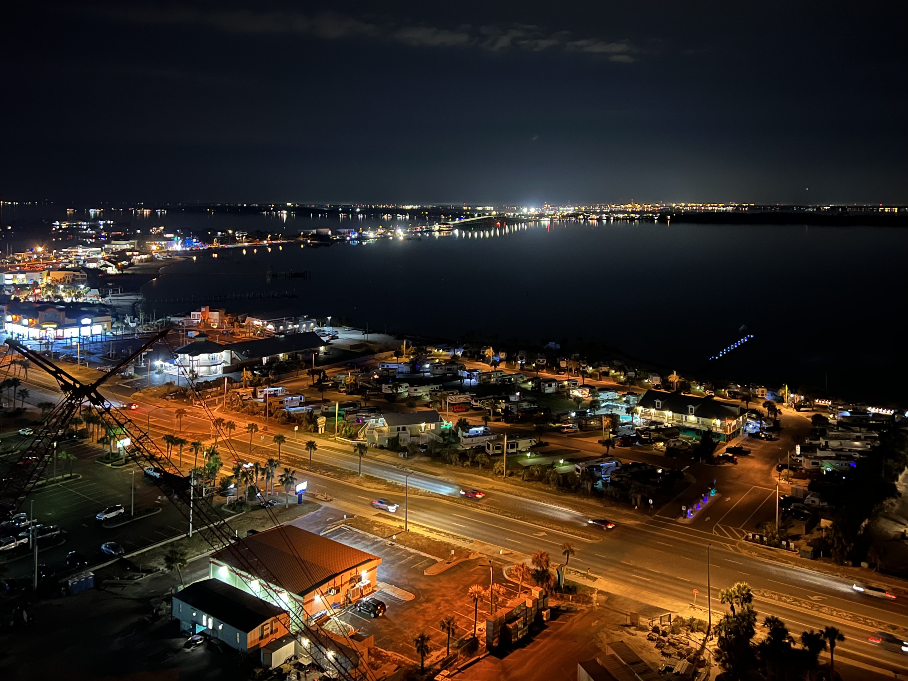
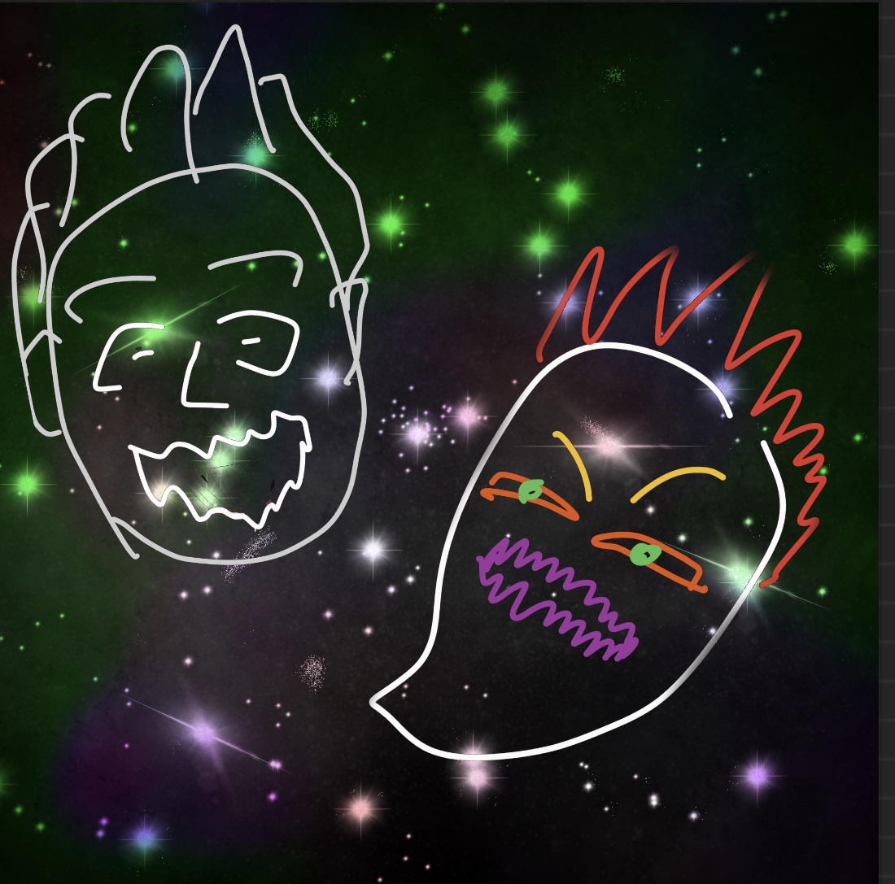

Photography of my trip to Florida for my grandmas birthday

One of my manny blind face drawings

One of my favorite acrylic paintings because of its color scheme
As an artist, I attempt to find pleasure in what I do. Although I have liked various digital platforms for my art, I prefer to employ Acrylic and Oil for the most of my work. Photography, rather than making an art piece, is my preferred method of capturing memories.
Photography of my trip to Florida for my grandmas birthday
One of my manny blind face drawings
One of my favorite acrylic paintings because of its color scheme